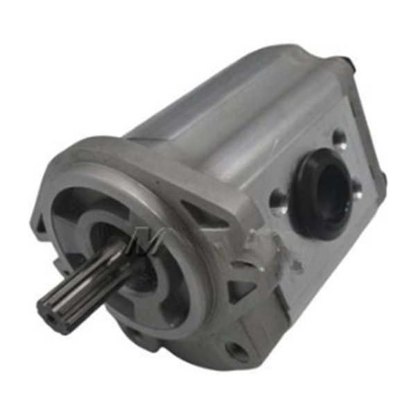

Parts › Hydraulics › 16709-401

Available
Email for a quote
Komatsu 16709-401 Hydraulic Pump
| OEM part number | 16709-401 |
| Fits | Komatsu |
| Models / notes | FD25/30-11 |
| Category | Hydraulics |
| Type | Aftermarket replacement |
Send us the quantity you need and we'll reply with pricing, usually within 24 hours. Not the exact part? We can source it. Send the part number or a photo.